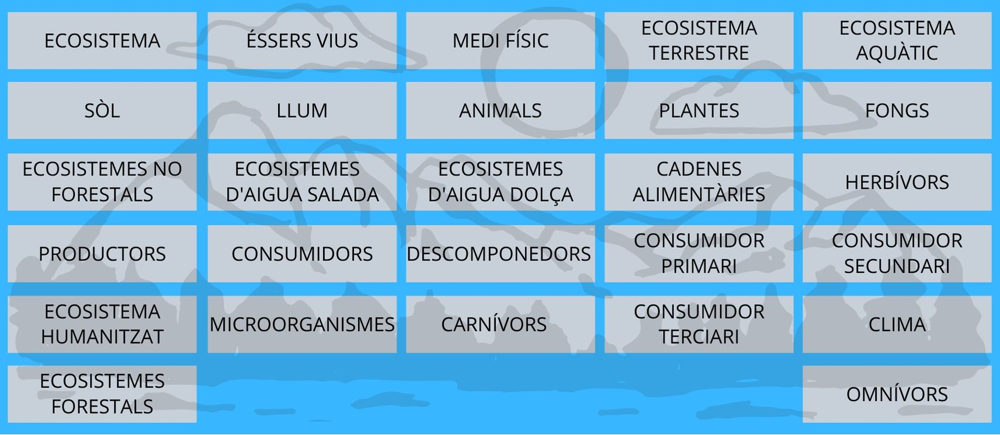
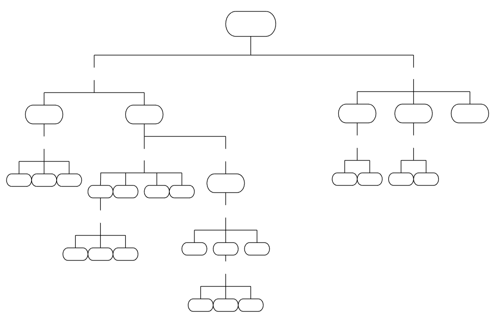

Fem un mapa conceptual!
Escolta-ho si vols!
Ara que ja has entès els conceptes i has practicat amb ells una mica. Busca un company que també estigui en aquest punt per fer parella amb ell/a.
Entre els dos, heu d'aconseguir crear un mapa conceptual sobre els ecosistemes relacionant els conceptes que heu treballat abans. Podeu consultar els conceptes tants cops com us faci falta.
Recordeu que en un mapa conceptual els conceptes van de més generals (a dalt) a més específics (a baix) i s'escriuen en ovals o rectangles. Tampoc heu d'oblidar utilitzar paraules de connexió entre conceptes.
Agafeu llapis i paper i a relacionar conceptes!
Aquesta és la llista de tots els conceptes que heu treballat abans:

Fixeu-vos en aquest mapa conceptual; us dona la pista de com organitzar-lo però heu de descobrir on aniria cada concepte igualment.
